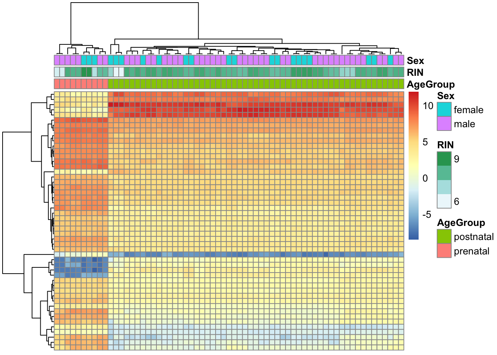
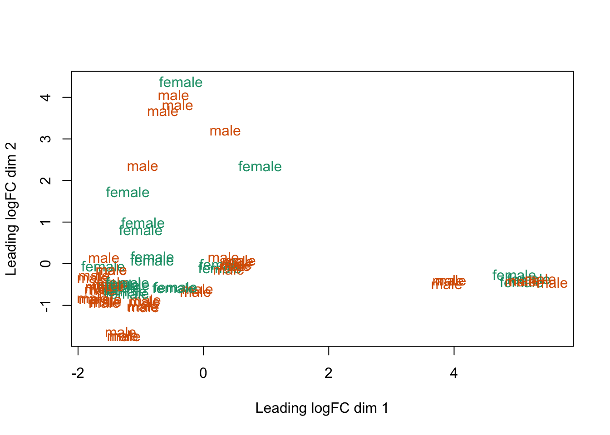

5.5 Visualizando genes DE
De vGene$E podemos extraer los datos normalizados por limma-voom. Revisemos los top 50 genes diferencialmente expresados.
- Visualizar 10 dimensiones es más fácil
## Extraer valores de los genes de interés
# Extraer de los primero 50 genes ordenados por su valor p y sacas sus valores de expresión normalizados
exprs_heatmap <- vGene$E[rank(de_results$adj.P.Val) <= 50, ]
class(exprs_heatmap)## [1] "matrix" "array"## [1] 50 65## Creemos una tabla con información de las muestras
## y con nombres de columnas más amigables
df <- as.data.frame(colData(rse_gene_SRP045638)[, c("prenatal", "sra_attribute.RIN", "sra_attribute.sex")])
# Cambio los nombres para más orden
colnames(df) <- c("AgeGroup", "RIN", "Sex")
## Hagamos un heatmap
library("pheatmap")
pheatmap(
exprs_heatmap,
# que agrupe los genes tanto en renglones como en cols que son las muestras
cluster_rows = TRUE,
cluster_cols = TRUE,
show_rownames = FALSE,
show_colnames = FALSE,
annotation_col = df
)
# 1 son genes diferenciados en edad pues nos muestra dos grupos muy diferentes , del lado derecho estan todas las de grupo prenatal y postnatal en derecho. 2 rin más bajos en blanco se agrupan, igual podríamos regresar y borrar esas muestras. 3. encuanto a sexo no hay un agrupamiento claro . 5 en el clustering en base a renglones Los resultados que tenemos no son tan sorprendentes porque hay una diferencia enorme en los perfiles de expresión en el DLPFC entre muestra pre y post-natales. Eso lo podemos ver con MDS (multidimensional scaling) tal como describen en este workflow.
## Para colores
library("RColorBrewer")
## Conviertiendo los grupos de edad a colores
col.group <- df$AgeGroup
levels(col.group) <- brewer.pal(nlevels(col.group), "Set1")## Warning in brewer.pal(nlevels(col.group), "Set1"): minimal value for n is 3, returning requested palette with 3 different levelscol.group <- as.character(col.group)
## MDS por grupos de edad multidimensional scalling
plotMDS(vGene$E, labels = df$AgeGroup, col = col.group)
## Conviertiendo los valores de Sex a colores
col.sex <- df$Sex
levels(col.sex) <- brewer.pal(nlevels(col.sex), "Dark2")## Warning in brewer.pal(nlevels(col.sex), "Dark2"): minimal value for n is 3, returning requested palette with 3 different levelscol.sex <- as.character(col.sex)
## MDS por sexo te fijas entonces en que están muy separados entre una condicion y otra
plotMDS(vGene$E, labels = df$Sex, col = col.sex)